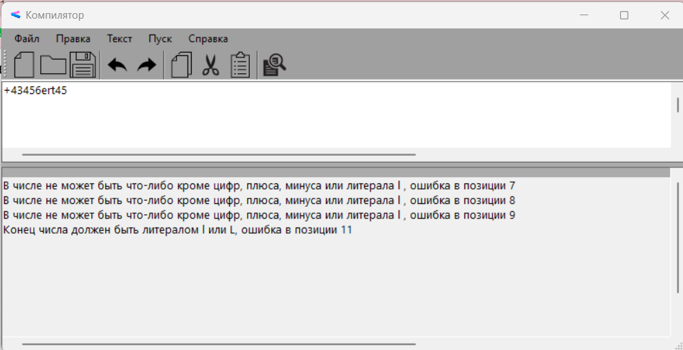
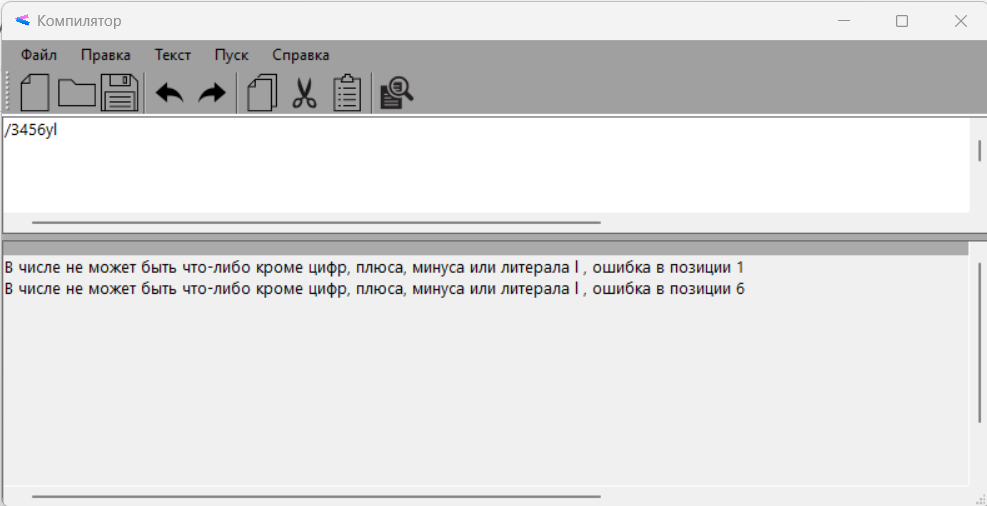
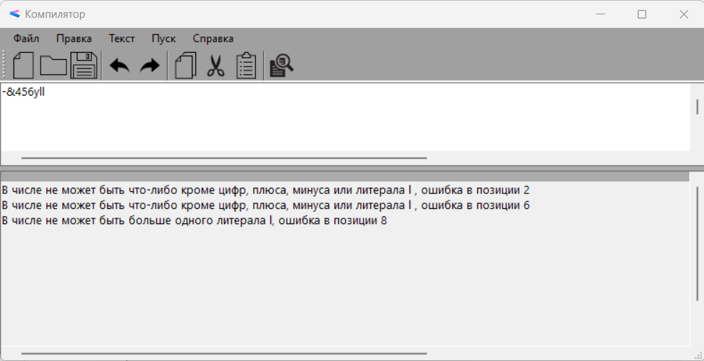
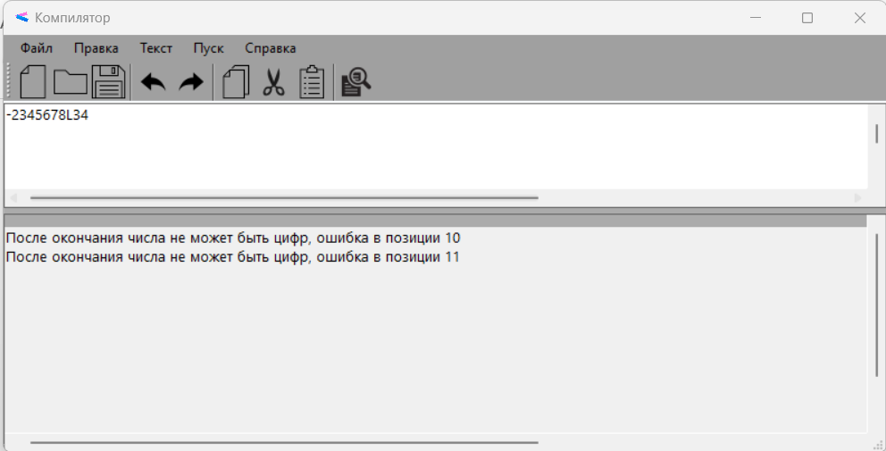

Тестовый пример
На рисунках 5-8 представлены тестовые примеры запуска разработанного синтаксического анализатора длинного целого языка С++.

Рисунок 5. Тестовый пример 1

Рисунок 6. Тестовый пример 2

Рисунок 7. Тестовый пример 3

Рисунок 8. Тестовый пример 4
Предыдущий документ
Следующий документ